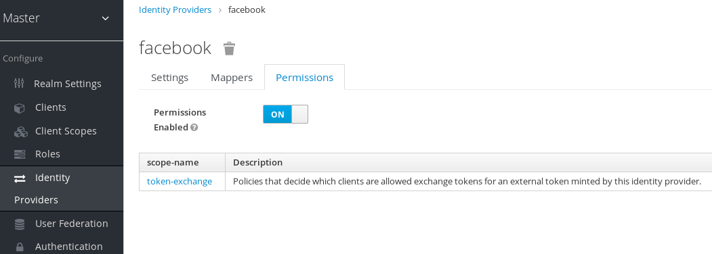
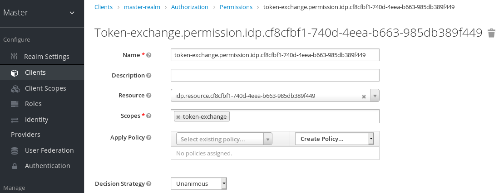
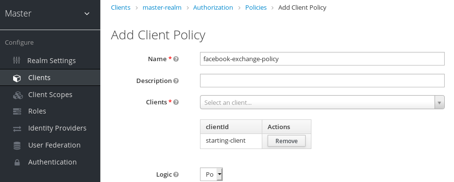
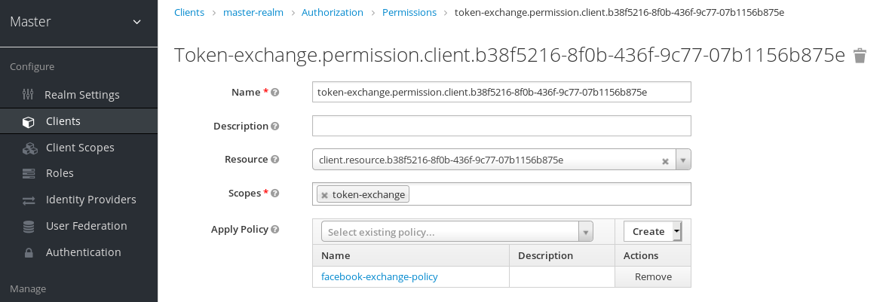

通过应用token换取企业微信access_token¶
注意：以模式下，每一个应用需要创建一个租户，并根据应用信息配置身份提供驱动，多应用不能共享一个租户
准备工作¶
token互换机制属于体验功能，在启动服务时，需要先通过以下配置开启:
-Dkeycloak.profile=preview
-Dkeycloak.profile.feature.token_exchange=enabled
后台配置:
开启权限配置项，如下图所示：

配置token exchange选项

创建一个客户端策略，选择支持token exchange的客户端

应用策略

换取access_token¶
curl -X POST \
-d "client_id=starting-client" \
-d "client_secret=geheim" \
--data-urlencode "grant_type=urn:ietf:params:oauth:grant-type:token-exchange" \
-d "subject_token=...." \
--data-urlencode "requested_token_type=urn:ietf:params:oauth:token-type:access_token" \
-d "requested_issuer=wechat-work" \
http://localhost:8080/auth/realms/myrealm/protocol/openid-connect/token
其中subject_token为当前应用（客户端）有效的token，requested_issuer为企业微信认证驱动名称：wechat-work